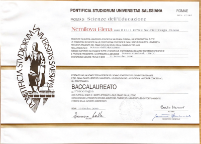
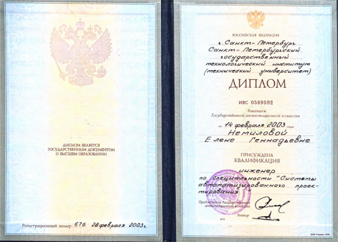

Dott.ssa
Elena Nemilova
Esperta in processi cognitiviSessuologa

Aiuto a trovare l'equilibrio in modo rapido ed efficace
PrenotaPremiata per eccellenze accademiche
Iscrizione all’Albo degli Psicologi del Lazio №22245
Membro ARPEC
Psicologa di riferimento del progetto sociale “Infogiovani”
Consulente tecnico presso scuole pubbliche e private
Esperta dei processi evolutivi e dei disturbi specifici di apprendimento
Chi sono
Dottoressa Elena Nemilova
- psicologa esperta in processi cognitivi
- sessuologa
«Amo l’approccio scientifico e mi impegno a sistematizzare le conoscenze sia per me stessa che per i miei interlocutori. Ho la capacità di spiegare concetti complessi in modo chiaro e concreto. Nel mio lavoro sono attenta, discreta e aperta.»
-
16+
anni di esperienza
-
150+
ore di terapia personale
-
200+
ore di supervisioni
Iscritta all’Albo degli Psicologi del Lazio con il numero 22245
Conduco vari corsi e training di formazione ed educazione psicologica. Pongo particolare attenzione alle conoscenze relative all’attività del cervello, soprattutto per promuovere il benessere psicologico del paziente. Approfondisco l’influenza delle distorsioni cognitivi ed il loro ruolo nella costruzione della salute psicologica
FORMAZIONE
-
2025 - Master Universitario di I livello "Sessuologia Clinica",
Università degli Studi di Milano

-
2013 - Master Universitario di II livello (Università La
Sapienza, Roma) - Summa Cum Laude

-
2011 - Laurea Magistrale in Psicologia (Università Pontificia
Salesiana, Roma) - Summa Cum Laude, Medaglia d’onore

- 2009 - Baccalaureato in Psicologia dello sviluppo e dell’educazione (Università Pontificia Salesiana, Roma) - Summa Cum Laude, Medaglia d’onore 
- Laurea in Ingegneria con la specializzazione in “Ottimizzazione dei sistemi di progettazione automatizzata” (Università Statale di Tecnologia, San Pietroburgo) 
DI COSA MI OCCUPO
“L'autodiagnosi può essere imprecisa, affidatemi l'analisi della vostra situazione”
Consulenza:
- crescita personale
- superamento delle crisi
- decision making
- orientamento professionale
- nuove dipendenze
Supporto psicologico
- aiuto ad affrontare ansia, depressione, apatia, procrastinazione
- aiuto a trovare leggerezza e desiderio di agire e vivere
- aiuto a comprendere il proprio mondo interiore
- i'essenza dei fenomeni e a trovare la strada verso una chiarezza assoluta
- aiuto ad affrontare il processo di adattamento in Italia
“Se le mie competenze non sono adatte alla vostra richiesta, vi aiuterò a trovare uno specialista appropriato"
COME LAVORO
-
Step 1: Formulazione degli obiettivi
La prima fase della nostra collaborazione consiste in una serie di incontri durante i quali ci conosciamo, analizziamo la richiesta e formuliamo chiaramente il problema. È importante creare una base solida per il lavoro futuro, includendo la definizione degli obiettivi e delle condizioni di collaborazione. In questa fase è possibile l'utilizzo di test psicologici
La durata di questa fase è di 2-4 sessioni
-
Step 2: Raggiungimento degli obiettivi
Appena abbiamo definito la direzione del lavoro, iniziamo a muoverci sistematicamente verso il raggiungimento degli obiettivi prefissati. Durante le sedute vengono applicati metodi ed esercizi concreti ed efficaci per ottenere i risultati desiderati
CONSULENZE
Dettagli importanti
DURATA DEGLI INCONTRI

La durata della consulenza individuale è di 45/50 minuti, ed è determinata dalle caratteristiche della psiche umana. In caso di incontri di coppia, la durata è maggiore (80 minuti)
METODI E APPROCCI
Lavoro attraverso l'ascolto attivo e il metodo maieutico. Nel mio lavoro utilizzo vari metodi diagnostici come questionar strutturati, metodi proiettivi, osservazione clinica. Sia durante le sedute che come compiti a casa propongo esercizi e tecniche cognitivo-comportamentali per l'applicazione pratica delle conoscenze acquisite
OBIETTIVO DEL LAVORO
L'obiettivo principale del mio lavoro è il cambiamento profondo degli schemi di comportamento (e di pensiero) rigidi e disfunzionali. A volte è sufficiente acquisire determinate competenze (comunicazione efficace, autostima adeguata, fiducia in sé stessi, ecc.), mentre altre volte è necessario analizzare la storia di vita che ha influenzato la persona
COSTO DELLE CONSULENZE
Le fatture per la consulenza psicologica rientra nelle spese medico-sanitarie e può essere detratta. L’onere economico che comporta il percorso psicologico deve essere gravoso ma sopportabile. La decisione di intraprendere un percorso psicologico può rappresentare una scelta difficile sia dal punto di vista emotivo che economico. Questo impegno coinvolge diverse variabili, come la durata del percorso, la frequenza delle sessioni e il tipo di lavoro concordato insieme allo specialista. Per questo motivo, la tariffa viene discussa e concordata di persona durante il primo incontro
Le storie di successo e le recensioni possono creare aspettative, e le aspettative possono rendere difficile il processo di cambiamento

Sono per un'interazione onesta,
potete trovare tutte le
recensioni su di me lasciate
volontariamente su
Google Business
Prenota
Lasci il numero di telefono o e-mail. La contatterò a breve